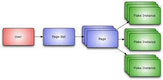
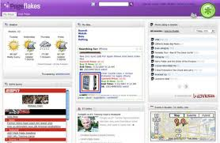
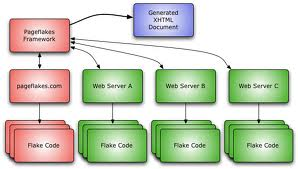

This section explains the basic concepts behind Pageflakes by going through an example. It demonstrates the creation of a flake that displays the current weather for a zip code entered by the user. (Apologies to users outside the United States – the intent is to present a simple example).
In this guide, we’ll demonstrate the following concepts:
To work through the following examples you’ll need knowledge of HTML and Javascript. You’ll also need access to a web server to upload your flakes.
The simplest flake you can make consists only of HTML code. Create a file called Weather.html that contains the following:
<html>
<body> Weather will go here. </body>
</html>
Upload the flake to any web server.
Add the flake by going to http://www.Pageflakes.com/developers and entering the URL of your flake in the "Test your flake" field.
Tip: The Pageflakes framework caches flakes that have a .html extension, making it difficult to debug flakes when you repeatedly upload the same flake. To prevent this, change your flake’s filename extension to .php (or another extension associated with a dynamic web scripting language supported by your web server, such as .jsp or .aspx). Giving your flake an extension other than .html prevents the Pageflakes server from caching your flake. Change your flake’s extension back to .html when your flake is completed to take advantage of caching, unless your flake needs to take advantage of server-side scripting.
Every Pageflakes user has exactly one top-level Page-Set (shown below). The Page-Set displays one or more pages, where each Page is shown as a tab. Similarly, each page can contain zero or more flake instances.

Each flake is represented by a single HTML file (which may include references to other files, including JavaScript, CSS, etc.). Those files are collectively referred to as the “Flake Code” and they are hosted on a web server. Usually, this will be Pageflakes.com, but flakes can be hosted on any web server.

When a user visits Pageflakes.com, the Pageflakes framework fetches and parses each of the flakes being used. It then generates a single XHTML document that is displayed to the user.

The Flake Code is not added to the page "as-is". Instead, the Pageflakes framework looks at each part of the flake, using those parts to selectively construct the Generated XHTML Document. This conversion from "Flake Code" to "Flake Instance" is described in more detail in the following sections.
There are four main components of a flake:
The XHTML markup for this example contains a single element. This is a placeholder where the markup showing the current weather will be inserted.
<body>
<div id='_PAGEFLAKES_content'/>
</body>
The id attribute is prefixed with _PAGEFLAKES_. This is to prevent two instances of the same flake from having conflicting id attributes within the same generated XHTML Document. The Pageflakes framework replaces this string with a unique identifier for every flake instance on a given page-set.
For example, if this flake appears twice in a page-set, the Generated XHTML Document will look something like:
<body>
<div id='abc12345current_weather'/>
</body>
and
<body>
<div id='xyz45678current_weather' />
</body>
The Flake User Object code is written by the flake developer and contains most of the flake functionality.
If a flake appears only once in a user’s page set, this code is called once to instantiate the flake. If the flake appears more than once, the code is called multiple times – once for every flake instance.
Here is the Flake User Object code for the example flake:
<script id='com.approver.hello' type='text/javascript'>
function com_Pageflakes_hello(id)
{
this.id = id;
this.fso = null;
this.load = function()
{
// Need to do this in "onload" to ensure the framework
// has loaded the HTML portion of the flake
var div = $(id + "content");
div.innerHTML = "Hello world!";
};
}
</script>
The class containing the code is called com_Pageflakes_hello. It takes a single parameter, id, which contains a unique identifier for the flake being created. This id is what the framework uses when it replaces the _PAGEFLAKES_ string.
To instantiate the Flake User Object, another script is required:
<script id='_PAGEFLAKES_FUO' type="text/javascript">
var _PAGEFLAKES_ = new com_Pageflakes_hello('_PAGEFLAKES_');
</script>
This script is included once for every time the Flake exists in the page set, and it simply creates a new instance of the Flake User Object. For a given instance, here is what the actual executed code may look like:
<script id='abc12345FUO' type="text/javascript">
var abc12345 = new com_Pageflakes_hello('abc12345');
</script>
Note:
This is the code for the "Hello World" example flake described in this section.
Next we’ll create another example flake. This flake will retrieve the value of weather for a region and display it in the flake. To create this flake, we'll need to add code to call a remote web service, then add a callback function that will handle the data retrieved by the service.
Here is Flake User Object code that demonstrates the use of a callback function:
<script id='com.Pageflakes.devdocs.weatherflake' type='text/javascript'>
function com_Pageflakes_devdocs_weatherflake(id)
{
this.id = id;
this.fso = null;
}
com_Pageflakes_devdocs_weatherflake.prototype = {
load : function (fso)
{
this.fso = fso;
ContentProxy.GetUrl("http://xml.weather.yahoo.com/forecastrss?p=80301&u=c",
PF.F(this, this._callback));
},
_callback : function(result)
{
var xml = PF.getXmlDoc(result);
var desc = PF.getFirstNode(xml, "item:description").firstChild.nodeValue;
var title = PF.getFirstNode(xml, "title").firstChild.nodeValue;
var div = $(this.id + "current_weather");
div.innerHTML = desc;
if (this.fso.title != title)
{
this.fso.setTitle(title);
this.fso.save();
}
xml = null;
}
};
</script>
In this example, the class containing the code is com_Pageflakes_devdocs_weatherflake. This class takes a single parameter, id, which contains a unique identifier for the flake being created. This id is what the framework uses when it replaces the _PAGEFLAKES_ string described in the previous example.
The Flake User Object can contain as many variables and functions as your flake requires. However, there is one function that is mandatory: the load() function. The Pageflakes framework calls load() after it instantiates the Flake User Object and is ready to load the flake on the page.
The load() function takes a single parameter, fso, which holds a reference to the Flake System Object. The fso parameter is stored for future use (see next example). The Flake System Object enables the Flake User Object to interact with the Pageflakes framework and make use of the framework API.
Note:
When the Pageflakes framework calls your flake's load() function, the flake:
Putting it all together, the weather flake looks like this:
<html>
<head>
<title>Weather Flake</title>
<script id='com.Pageflakes.devdocs.weatherflake'
type='text/javascript'>
function com_Pageflakes_devdocs_weatherflake(id)
{
this.id = id;
this.fso = null;
}
com_Pageflakes_devdocs_weatherflake.prototype = {
load : function (fso)
{
this.fso = fso;
ContentProxy.GetUrl("http://xml.weather.yahoo.com/forecastrss?p=80301&u=c",
PF.F(this, this._callback));
},
_callback : function(result)
{
var xml = PF.getXmlDoc(result);
var desc = PF.getFirstNode(xml, "item:description").firstChild.nodeValue;
var title = PF.getFirstNode(xml, "title").firstChild.nodeValue;
var div = $(this.id + "current_weather");
div.innerHTML = desc;
if (this.fso.title != title)
{
this.fso.setTitle(title);
this.fso.save();
}
xml = null;
}
};
</script>
<script id='_PAGEFLAKES_Instance' type="text/javascript">
var _PAGEFLAKES_ = new com_Pageflakes_devdocs_weatherflake('_PAGEFLAKES_');
</script>
</head>
<body>
<div id='_PAGEFLAKES_current_weather'/>
</body>
</html>
In the previous example, the flake was hard-coded to show weather from the 80301 zip code. In this example, we'll improve the flake by adding a settings page. In the settings page, users can select a zip code and the flake will display the weather for that zip code.
First, add a variable to hold the zip code within the com_Pageflakes_devdocs_weatherflake function:
var zipcode = null;
Next, create a special
<body>
<div id='_PAGEFLAKES_current_weather'/>
<div id='_PAGEFLAKES_edit' class="edit">
<table>
<tr>
<td>ZIP code</td>
<td><input id='_PAGEFLAKES_zipcode' type='text'></td>
</tr>
<tr>
<td>
<input id="_PAGEFLAKES_saveButton"
onclick="_PAGEFLAKES_.saveOptions();
type="button"
value="Save" />
</td>
<td>
<input id="_PAGEFLAKES_cancelButton"
onclick="_PAGEFLAKES_.cancelOptions();"
type="button"
value="Cancel" />
</td>
</tr>
</table>
</div>
</body>
This markup includes a single field where the zip code can be entered, as well as Save and Cancel buttons. Each button's onclick attribute invokes saveOptions() and cancelOptions() respectively (those will be shown shortly). The _PAGEFLAKES_ prefix indicates that those functions belong to the Flake User Object.
Note:
Then, script is added to retrieve the zip code from storage and save it in this variable, as well as the settings page:
this.loadOptions = function()
{
if (fso.Profiles["zip"])
zipcode = fso.Profiles["zip"];
else
zipcode = "80301";
var zipelement = $(id + "zipcode");
zipelement.value = zipcode;
};
The loadOptions() function uses a key-value pair list in the Flake System Object to retrieve the zip code. This list can be used to store any flake data.
Note: PF.$(id + "zipcode") is used as a shortcut for document.getElementById(id + "zipcode"). For more details, see Pageflakes Functions.
The last couple of lines, are used to retrieve the <input> element from the settings page, and set the correct zip code in that element. In addition, the zip code is set it in the newly created variable.
Next, the saveOptions() function is created:
this.saveOptions = function()
{
var zipelement = $(id + "zipcode");
zipcode = zipelement.value;
fso.Profiles["zip"] = zipcode;
fso.save();
fso.hideEditArea();
_self_.getWeather();
};
this.getWeather = function()
{
var url = "http://xml.weather.yahoo.com/forecastrss?p=" + zipcode + "&u=c"
ContentProxy.GetUrl(url, callback);
};
The saveOptions() function does the following:
<input> element containing the zip code and extracts its value.The getWeather() function is slightly modified to invoke the ContentProxy with a URL that reflects the correct zip code.
Finally, the cancelOptions() function:
hideEditArea() function on the Flake System Object
this.cancelOptions = function()
{
fso.hideEditArea();
_self.loadOptions();
};